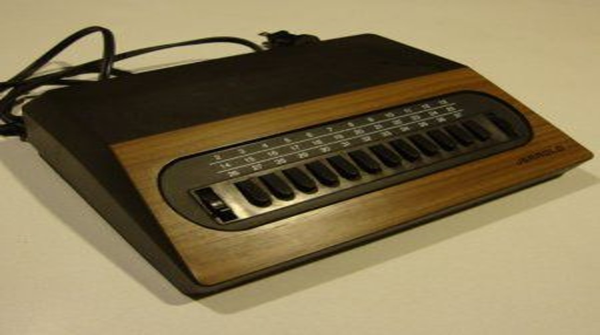

Godina: 1898.
U elektronici je daljinski upravljač elektronički uređaj koji se koristi za upravljanje drugim uređajem iz daljine, obično bežično. U potrošačkoj elektronici daljinski upravljač može se koristiti za upravljanje uređajima kao što su televizor, DVD uređaj ili drugi kućanski uređaji. Daljinski upravljač omogućuje rad s uređajima koji su izvan dosega. Najbolje funkcioniraju kada se koriste s kratke udaljenosti. Rani televizijski daljinski upravljači (1956–1977) koristili su ultrazvučne tonove. Današnji daljinski upravljači obično su potrošački infracrveni uređaji koji šalju digitalno kodirane impulse infracrvenog zračenja. 1898. Nikola Tesla prijavio je svoj patent nazvan "Metoda uređaja za upravljanje mehanizmom kretanja vozila ili vozila", što je javno pokazao radio-upravljanjem čamca tijekom električne izložbe u Madison Square Gardenu. Tesla je svoj brod nazvao "teleautomatom".